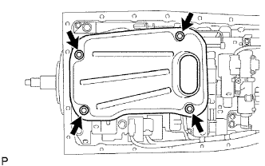
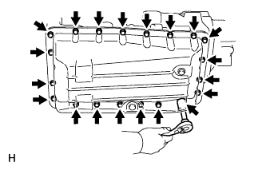

VALVE BODY ASSEMBLY > INSTALLATION |
| 1. INSTALL TRANSMISSION VALVE BODY ASSEMBLY |
 |
Install the spring and check ball body.
 |
Insert the pin of the manual valve into the hole of the manual valve lever.
 |
Install the transmission valve body with the 19 bolts.
Install the detent spring and detent spring cover with the bolt.
| 2. CONNECT TRANSMISSION WIRE |
 |
Connect the 7 connectors to the solenoid valves.
Connect the 2 ATF temperature sensors with the 2 clamps and 2 bolts.
| 3. INSTALL VALVE BODY OIL STRAINER ASSEMBLY |
 |
Coat a new O-ring with ATF and install it to the oil strainer.
Install the oil strainer with the 4 bolts.
| 4. INSTALL AUTOMATIC TRANSMISSION OIL PAN SUB-ASSEMBLY |
 |
Install a new gasket and the oil pan with the 20 bolts.
| 5. CONNECT CABLE TO NEGATIVE BATTERY TERMINAL |
| 6. ADD AUTOMATIC TRANSMISSION FLUID |
Add automatic transmission fluid (Click here).